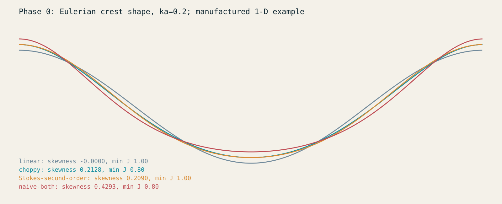

Baseline / original 1920 x 1080
Fixed seed, time, pose, resolution, exposure per condition. Cloud optical thickness differs between models: these are controlled mechanism comparisons, not equal-quality benchmarks. Opacity view is tone-mapped.
10-second wall-clock recordings; variable rendered frame intervals. No interpolation. Comparisons share settings, but simulation timestamps are not frame-synchronized. Capture throughput is not display-paced FPS.
Independent crest experiment

Manufactured one-dimensional analysis. No validated breaking roller is implemented.